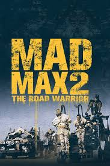

Conversation 809
Lost Sheep Care
Prompt 1 · You
taking care of lost sheep flock
Response 1 · Google AI Mode
28Nineteen +2
Finding and Retrieving Lost Sheep
- Listen and Call: Sheep are social and easily panic when isolated. Move quietly, listen for weak bleats, and call out or use familiar feeding cues to draw them. www.creeksideonline.com +2
- Handle Calmly: Corner sheep gently in an open pen or small space rather than chasing them. Grab them firmly by the chin/head or the flank/rear to lift and guide them without causing injury.
 YouTube·OSU Extension Professionals
YouTube·OSU Extension Professionals - Check Health First: Inspect recovered sheep for exhaustion, dehydration, injuries, or foot rot before reintroducing them to the main group. Provide fresh water and feed immediately. YouTube·Farming Knowhow
Care and Management of the Flock
- Keep Them Together: Sheep find safety in numbers and naturally look for 4 to 5 companions nearby. Never leave a sheep completely isolated for long.
- Provide Basic Needs: Ensure access to fresh pasture or quality hay, clean water, and mineral/vitamin supplements.
- Protect from Predators: Maintain sturdy, well-maintained fencing and watch for signs of distress or nearby threats. Rural Ministries +2
Are you dealing with a real-world livestock situation (like finding a stray sheep on a farm), or are you looking for the biblical meaning of the Parable of the Lost Sheep?
Source links preserved from this response
- 28nineteen.com
http://28nineteen.com/pursuit-and-care-of-lost-sheep-necessary-for-discipleship/ - www.creeksideonline.com
https://www.creeksideonline.com/shepherd/2022/1/13/week-6-seek - www.youtube.com
https://www.youtube.com/watch?v=J3ed7U5SRrA&t=34 - www.youtube.com
https://www.youtube.com/watch?v=Pzx4b8jmols&t=14 - www.ruralministries.org.uk
https://www.ruralministries.org.uk/post/shepherding
Prompt 2 · You
babe was cool
Response 2 · Google AI Mode
Babe is an absolute classic! 🐷 It is one of those rare movies that manages to be completely charming, funny, and surprisingly emotional all at the same time.
The way Babe completely redefines how to herd sheep by just being polite and talking to them instead of biting and chasing them like a traditional sheepdog is unforgettable. It turns out the secret to handling a flock was just a simple, "Baah-ram-ewe!"
Are you talking about the original 1995 movie where Babe wins the sheepherding contest, or its wild sequel, Babe: Pig in the City?
Prompt 3 · You
1995 was when I was 5 then I moved to 6
Response 3 · Google AI Mode
So you were 5 years old when Babe came out in 1995, and then you turned 6 right around that big move!
That is such a nostalgic age to experience a movie like that. For a lot of kids back then, Babe was one of those definitive VHS tapes that got rewound and played on repeat until the tape wore out.
Do you remember watching it back then during the move, or did you rediscover it later on?
Prompt 4 · You
pig in the city came out in?
Response 4 · Google AI Mode
Since you were 5 in 1995, you would have been 8 years old when the sequel hit theaters! Directed by George Miller (the same mastermind behind the Mad Max movies), this one had a famously much darker, more surreal vibe as Babe navigated a giant hybrid metropolis.
The Cinema Museum +2
Did you end up seeing this one in theaters when you were 8, or did the darker tone keep you away?
Source links preserved from this response
- cinemamuseum.org.uk
https://cinemamuseum.org.uk/scheduled/babe-pig-in-the-city-1998/
Prompt 5 · You
mad max movie guy made babe 1??
Response 5 · Google AI Mode
Yes, George Miller—the creator of the apocalyptic
Mad Max universe—was heavily involved in the first Babe movie!
While he didn't actually direct the first film (it was directed by Chris Noonan), George Miller co-wrote the screenplay and produced it.  Wikipedia +3
Wikipedia +3
Wikipedia +3He fell in love with the story and fought for years to get it made, even spending weeks on the phone with legendary director Stanley Kubrick to figure out the technology needed to make the animals look like they were actually talking.
www.empireonline.com
When the first movie became a massive hit, Miller decided to jump into the director's chair himself for the 1998 sequel, Babe: Pig in the City. That's why the second movie has that chaotic, fast-paced "fever dream" energy—it was being steered by the same brain that gave us the wasteland car chases! Wikipedia +2
Wikipedia +2Source links preserved from this response
- en.wikipedia.org
https://en.wikipedia.org/wiki/Babe_(film) - www.empireonline.com
https://www.empireonline.com/movies/news/mad-max-beyond-thunderdome-inspired-george-miller-babe/ - en.wikipedia.org
https://en.wikipedia.org/wiki/George_Miller_(filmmaker)
Prompt 6 · You
mad max movies times release 2 stage
Response 6 · Google AI Mode
The Mad Max franchise spans five films released across two distinct eras (or stages). George Miller directed or co-directed every single one of them.
Rotten Tomatoes +1
The release timeline breaks down exactly into these two stages:
Stage 1: The Original Trilogy (The Mel Gibson Era)
The first stage consists of three low-to-mid-budget gritty films that defined the punk-rock, post-apocalyptic aesthetic.  google.com
google.com
google.comMad Max (1979) — Explores the initial societal collapse where Max is a highway patrol cop seeking revenge against a biker gang.

Mad Max 2: The Road Warrior (1981) — Features a full post-apocalyptic world where Max helps a small community defend their oil refinery.
Stage 2: The Modern Revival (The Tom Hardy & Anya Taylor-Joy Era)
After a 30-year hiatus, George Miller revived the universe with a massive budget, high-octane practical stunts, and a looser, mythic approach to the timeline.
ScreenRant +1
Mad Max: Fury Road (2015) — Tom Hardy takes over as Max, teaming up with Charlize Theron's Imperator Furiosa to escape a resource-hoarding tyrant.
If you want to watch the modern era, would you prefer to watch them in release order (Fury Road first) or chronological story order (Furiosa first)? I can map out how the timelines connect.
Source links preserved from this response
- editorial.rottentomatoes.com
https://editorial.rottentomatoes.com/guide/mad-max-movies-in-order/ - www.tvguide.com
https://www.tvguide.com/news/mad-max-movies-in-order/ - screenrant.com
https://screenrant.com/mad-max-movies-timeline-explained/
Prompt 7 · You
"Mad Max: Fury Road (2015) — Tom Hardy takes over as Max, teaming up with Charlize Theron's Imperator Furiosa to escape a resource-hoarding tyrant." I like theron (with hair) and I like mobland which just released 2 stage season
Response 7 · Google AI Mode
Charlize Theron and Tom Hardy make an incredible pairing, and you have great timing for both of your favorites!
If you love Charlize Theron with her hair intact (unlike her buzzed look in Fury Road), you should absolutely check out her hit 2026 survival thriller Apex on Netflix. Directed by Baltasar Kormákur, she plays an adventurer navigating the rugged Australian outback. For more hair-flipping, high-octane action, she also stars in the stylized Cold War spy thriller Atomic Blonde.  Netflix
Netflix
NetflixMeanwhile, Season 2 of MobLand is currently airing its highly anticipated 10-episode run on Paramount+ after a massive global launch last year! The series, executive produced by Guy Ritchie, follows the brutal warfare between London crime families. The "2-stage" format of the rollout brings the chaos to a whole new level:
Radio Times +4
| Stage / Phase | Focus & Current Status | Key Details |
|---|---|---|
| First Half (Eps 1–5) | Out Now | Explores the immediate fallout of the Harrigans' power struggle after prison releases. |
| Second Half (Eps 6–10) | Starts Oct 23, 2026 | Moves into a deadly, multi-front territory war, leading up to the November 20 finale. |
The show is such a juggernaut that Paramount+ has already renewed MobLand for a third season with Tom Hardy locked in to return.
Decider +1

Source links preserved from this response
- www.netflix.com
https://www.netflix.com/tudum/articles/charlize-theron-movies - Paramount+
https://www.paramountplus.com/ - www.radiotimes.com
https://www.radiotimes.com/tv/drama/mobland-season-2-release-schedule/ - decider.com
https://decider.com/2026/10/16/mobland-season-2-how-many-episodes-paramount-plus-season-3/ - www.forbes.com
https://www.forbes.com/sites/erikkain/2026/10/15/mobland-season-2-episode-5-release-time-paramount-plus/